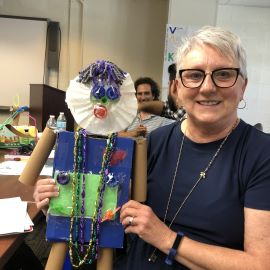
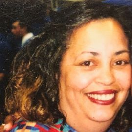
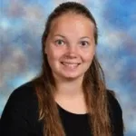
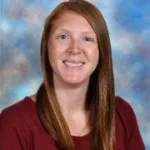
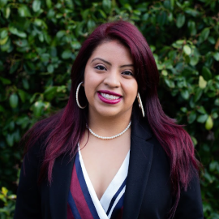
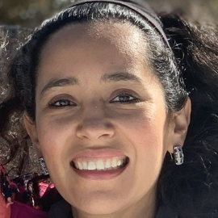
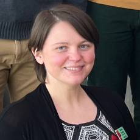
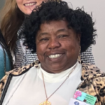
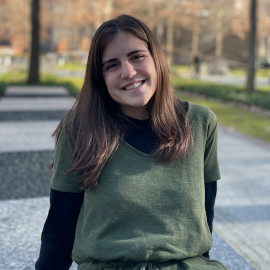
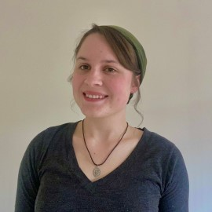

Our dedicated team works collaboratively to bring innovative solutions and impactful results to our community. Get to know the passionate individuals driving our mission forward.
Principle Investigators & Senior Personnel
Frances K. Harper Principal Investigator (PI) STEM EducationPrincipal Investigator (PI) STEM Education
Lori Caudlebr
Co-PI Child & Family Studies
Margaret Quinn
Co-PI Early Childhood Education

Darelene Greene
Co-PI PreK Instructional Coach
Sukanya Moudgalya
Co-PI Computer science Education
Graduate Researchers
Charles Flowers, Jr.
Graduate Researcher Early Childhood Education
Hannah Thompson
Graduate Researcher Child & Family Studies
Temvy Matsebula
Graduate Researcher Child & Family Studies
Teachers & Educational Assistants

Doris Bourne
Educational Assistant Fair Garden PreK

Rachel Clair
Preschool Teacher Fair Garden PreK
Pam Hall
Preschool Teacher Fair Garden PreK
Rebecca Hickey
Preschool Teacher Christenberry Elem
Terra Navarro
Educational Assistant Christenberry Elem

Alyssa Parker
Preschool Teacher Spring Hill Elem
Taja Welch
Preschool Teacher Fair Garden PreK
Kyli Wooten
Preschool Teacher Fair Garden PreK
Tori Yardley
Educational Assistant Inskip Elem
Parent Leaders

Luci Diego
Parent Leader

Monica Gonzalez
Parent Leader

Jessica Grafton
Parent Leader

Marilyn Langston
Grandparent Leader
Dana Schumpert
Parent Leader
Undergraduate Research Assistants
Rethika Ambalam
Undergrad Researcher

Abbey Kochman
Undergrad Researcher Therapeutic Recreation
Our Advisory Board
Megan Barolet-Fogarty
Centro Hispano de East TN
Theodore Chao
The Ohio State University
Cara Djonko-Moore
Rhodes College
Amy Parks
Michigan State University
Janae Peterson
Knoxville Utilities Board
Past Partners
Haley Anderson
Preschool Teacher Inskip Elem 2022-2023
Andrew Bonsted
Undergrad Researcher Fall 2021-Summer 2022
Andrea Bridges
Educational Assistant Pond Gap Elementary 2022-2023
Martha Hampton
Educational Assistant Spring Hill Elementary 2022-2023
Angela Hazen
Preschool Teacher Pond Gap Elementary 2022-2023
Amie Kahovec
Graduate Researcher Child & Family Studies 2022-2023
James Larsen
Postdoctoral Researcher Early Childhood Education 2021-2023
Sara Meghabghab
Undergrad Researcher Spring 2022
Tabatha Rainwater
Graduate Researcher 2021-Summer 2022
Jennifer Raley
Preschool Teacher 2021
Maritza Sierra Rosado
Preschool Teacher Fair Garden PreK 2022-2023
Amir Sadovnik
Senior Personnel Computer Science 2021-2023
Porscha Settlemeyer
Preschool Teacher 2021-2022
Indrani Singh
Graduate Researcher Fall 2021
Mason Thomas
Undergrad Researcher Spring 2022
Sarah Qureshi
Preschool Teacher Lonsdale Elementary 2021-2022

Jade Williams
Undergrad Researcher Spring 2022
Jamila Burroughs
SHADES Director 2021-Spring 2022
Melanie Humphrey
Educational Assistant 2021-Spring 2022
Stephanie Johnson Parent Leader 2021
Bethany Parker
Graduate Researcher Cultural Studies in Edu 2022-2023
Francia Zelaya
Graduate Researcher STEM Education 2021-2023
×
Doris Bourne
is an educational assistant at Fair Garden Preschool who has been with the
Knox County Schools since 1992. She attended Tusculum College. Doris loves to read in her spare time.
Andrew Bonsted
is a freshman Undergraduate Research Assistant majoring in
Computer Science at the
University of Tennessee, Knoxville. In high school, he founded and ran a monthly math workshop for elementary school students to help them find a passion for math through fun math-related
activities. In his free time, Andrew likes to be outdoors with friends, play chess, and cheer on the Carolina Panthers.
Flowers’s research interests include investigating how contexts support the learning and social emotional development of children in early childhood educational settings and
during their elementary school years. Overall, his objective is to inform the development of policies and programs aimed at improving the life chances of children and families.
Darelene Greene
is a Co-PI on the CRRAFT project and the
Title 1 Pre-K Instructional Coach for
Knox County Schools . Green earned a Bachelor of Science degree in Early Childhood
Education for
Appalachian State University as well as a master’s degree from
Lesley University in Curriculum and Instruction with a Specialization in Creative Arts and Learning. Greene currently serves ten schools, including the two partner preschools within CRRAFT.
She has served in this role for five years.
Prior to her current role, Greene was a Pre-K and 1st Grade teacher for 30 years. While in the classroom, She was awarded
Beaumont Magnet Elementary School Teacher of the Year in 2012 and was the Extraordinary
Teacher Featured in the Knoxville News Sentinel. In her free time, she enjoys traveling, shopping, and enjoying great food.
Rebecca Hickey
is a certified Teacher with Rebecca Hickey is a certified Teacher with
Knox County Schools currently working at Christenberry Elementary School. She previously served as Lead Teacher at
Fair Garden Preschool. She has worked at Fair Garden since 2010. She was awarded teacher of the year in 2019 and 2021. Rebecca graduated from the University of Tennessee,
Knoxville in 2009 as a part of the
Department of Child and Family Studies with a Bachelor of Science degree in Human Ecology with her concentration in Early Development and Learning PreK-K.
In her free time she enjoys
kayaking and visiting as many waterfalls as possible with her husband and two boys.
Amie’s research interests include youth exposed to domestic violence and the legal systems. Specifically examining the
formal and legal system disclosure decisions of youth exposed to domestic violence, as well as the ways children experience formal and legal systems within the context of exposure to domestic violence.
Abbey spent a year working as the Worship and Tech Intern at Stonecreek Church in 2019. She also was a Platform Lead Counselor at Camp Arrowhead in 2020 where she planned and executed a daily
curriculum for the 200+ campers in attendance each week, and also created online camp modules for families to use at home.
In her free time Abbey enjoys reading, baking, playing musical instruments, and yoga.
Larsen’s current program of research focuses on individual and contextual factors that contribute to early childhood cognitive development and learning. He is particularly
interested in the ways caregivers, teachers, and early learning environments influence children’s divergent thinking and problem-solving skills. His scholarship also explores new methodologies and measures for studying various dimensions of
early childhood learning and development.
Since June of 2020, Sara has worked as both an Assistant Youth Development Specialist and a Youth Development Specialist at various elementary schools for the
YMCA of East Tennessee. This experience has taught her the importance of robotics in elementary aged children.
In her free time, she likes to read and spend time with her family
and friends.
Sarah Qureshi
is entering her 8th year with Knox County Schools at Lonsdale Elementary School. She spent many years working at
Sam E. Hill Primary as a PreK teacher. She has previously presented workshops on higher order thinking questions and on Handwriting Without Tears and fine motor skill development.
She is a new mother to identical twin girls. Sarah was also a mentor coach and teacher with Douglas Cherokee Head Start for two years, where she presented to teachers about childhood nutrition, social emotional learning, and other topics pertaining
to the CLASS observation system. In her free time, Sarah loves traveling, trying new restaurants, and collecting children’s literature.
Prior to graduate school, Rainwater was formerly a mathematics teacher at
Austin-East Magnet High School. She was awarded Austin-East Teacher of the Year in 2019. She enjoys engaging with teachers and families and blurring the lines between
mathematics and science by creating fun informal learning opportunities. You can learn more about Rainwater at her website:
https://sites.google.com/vols.utk.edu/tabatharainwater/home
Jennifer Raley
is a Title 1 Pre-K teacher for
Knox County Schools. She has worked with Satellite (emotionally disturbed), 1st and 2nd grade, and with 2-5 year old children of recovering addicts for Helen Ross McNabb.
She
currently works with 4-year olds and this is her 7th year working for Knox County Schools. Jennifer graduated from the University of Tennessee, Knoxville in 2011 with a Masters of Science in Education (with a concentration Deaf education and
an endorsement of K-6).
Porscha Settlemeyer
is a PreK teacher at
Sam E. Hill Primary entering her 8th year in this role. She graduated from the University of Tennessee, Knoxville with her degree in Child and Family Studies and a PreK-3 licensure.
She served as a student intern for one year in a 1st grade classroom prior to beginning in her current position. Porscha was awarded Teacher of the Year during the 2017-2018 school year and was recently recruited to take part in the Aspiring
Assistant Principal Program at Tennessee State University. She is bilingual in Spanish and English.
Porscha has three children – two daughters ages 6 and 4, as well as a son who is an infant. In her free time, she enjoys traveling,
shopping, and dining.
Indrani’s current research program focuses on “Mathematics Anxiety: Secondary Students’
Avoidance of Elective Mathematics” that impacts secondary mathematics enrollment and future career paths. In addition, she was awarded the Dr. Marva Rudolph Scholarship for Diversity and Engagement in 2021.
Indrani has 27 years of
experience in K-12 education. Before joining graduate school, she was the principal of a K-12 school in India. She hopes to promote positive mathematical identities in students by making them believe in themselves and be convinced that “Winners
Never Quit.”
Mason Thomas
is an Undergraduate Research Assistant in his freshman year studying
Environmental and Soil Sciences at the
University of Tennessee, Knoxville. After graduating he plans to work in the Science Communication field. His hobbies include writing, gardening, and hiking, and his favorite children’s book
is A Bad Case of the Stripes. He hopes to eventually work with well known educational personalities to help the next generation learn to love science.
Hannah’s research interests include
supporting the early education workforce development, practitioners; beliefs and attitudes, equity in early childhood, science education, social emotional development and challenging behaviors, and adverse experiences in early childhood.
Dr. Taja M. Welch
is a Pre-K 3 teacher at
Fair Garden Early Learning Center. She has taught preschool for 5 years and has taught at Fair Garden for the last 3 years. Prior to teaching at Fair Garden she taught 1st
grade at Sunnyview Primary, and private Pre-K at Garden Of Discovery Learning Center. She has been with Knox County Schools since 2006. She received her Master’s in Curriculum and Instruction, and her EdD in Curriculum and Instruction and
Educational Leadership from Lincoln Memorial University in 2011 and 2016.
Her research interests include learning styles and investigating how African American Single Mother Perceptions affect the education of their preschool age children.
She has presented her research at LMU’s 1st annual research day in 2016 as well as done several research presentations for the undergraduate classes of her dissertation chair. Most recently she was asked to participate as a presenter in a
series panel discussions entitled Courageous Conversations through LMU with her mother Dr. Olga M. Welch, and has been involved with the CRRAFT program and had a project funded by Donor’s Choose. In her spare time, she enjoys spending time
with her family and friends, traveling, working out, and working as a private tutor.
Jade Williams
is an Undergraduate Research Assistant in her junior year who is studying Early Childhood Education for Preschool and Kindergarten. She currently works as an after school teacher at
Sacred Heart Cathedral School.
After graduation, Jade plans to be a preschool teacher. In her free time, she enjoys spending time with her husband, writing, and painting, and
she has a personal goal of writing and illustrating children’s books one day.
Kyli Wooten
has been a PreK teacher at
Fair Garden Preschool for the past 18 years. She received her undergraduate degree from Eastern Tennessee State University and a graduate degree from Grand Canyon University.
In addition to serving as lead teacher in a 3-year old classroom, Kyli regularly mentors preservice and new teachers, serves on the leadership team, and tutors K-12 students. She has co-presented workshops on Conscious Discipline and math
instruction.
In her free time, Kyli enjoys running, participating in triathlons, and spending time outdoors. She has a great love for children and animals.